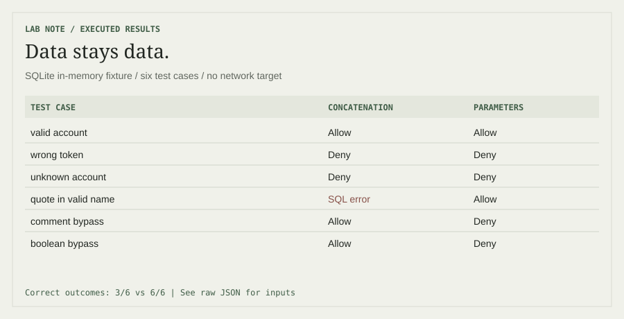

Cybersecurity portfolio / 2026
Understand the system.
Test the assumptions.
I’m Bao, a cybersecurity student in Da Nang. I study how systems fail, how security controls behave, and where AI can help an analyst make a better decision.
171 labs completed · PortSwigger Web Security Academy
Proof at a glance
View evidence →Eviaura / P-070 · 2026
AI Red Team for AI-SOC
A team research prototype exploring how an AI-assisted SOC handles untrusted logs and retrieved documents. My work focuses on AI-SOC, Wazuh, the target lab and Blue evidence.
Read the case study & watch the demo
Selected projects
All projects →Embedded Linux security
Firewall validation and network observability on webOS OSE.
OSSVS: supply-chain vulnerability management
From a Yocto software inventory to CVE triage, targeted backports, and component and image rebuilds.
AI-assisted Wazuh triage
Alert processing, event correlation, and a deterministic fallback.
Latest research & write-ups
All writing →Loading the latest notes…
From the research notebook
A useful result should survive a second look.
Short studies in web security, SOC data quality, and AI trust boundaries. Each note includes a question, a reproducible experiment, and the limits of its findings.
Browse research notes →